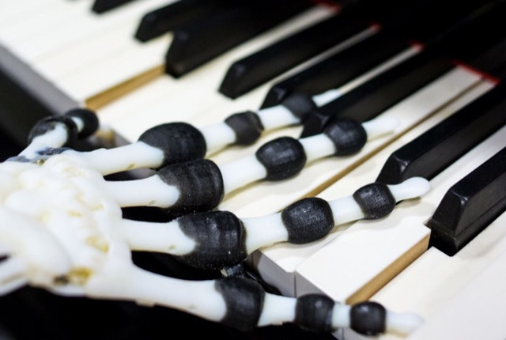
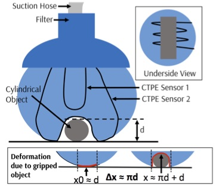
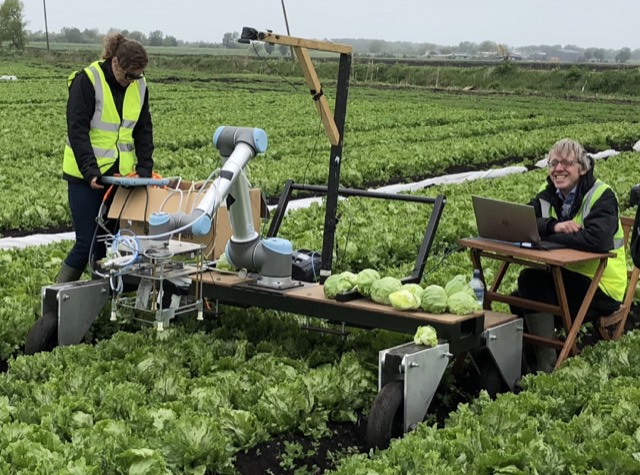
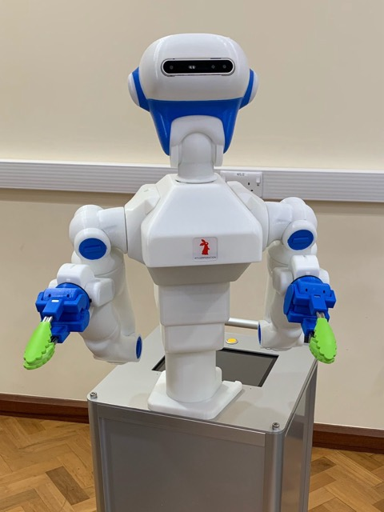
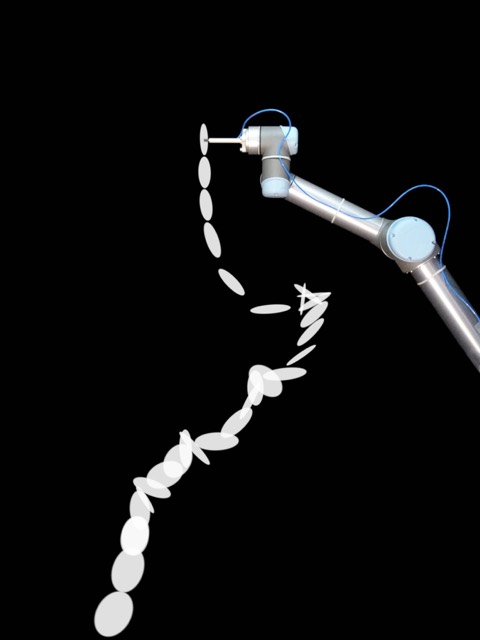
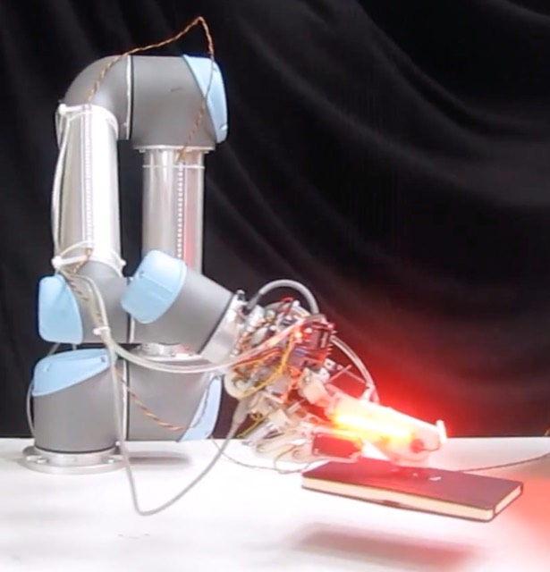
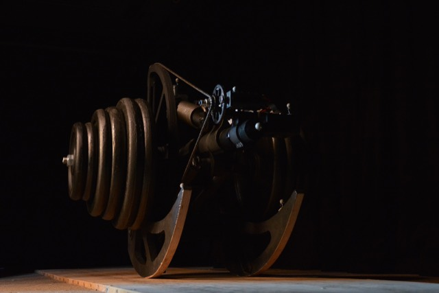
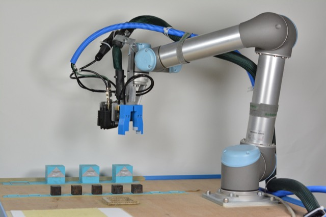

Manipulation
Robotic hand
Question: How can musculoskeletal form, passive mechanics, and control support dexterous, human-like interaction?
Related project →Research / Robots
Each robot makes a question physical: about morphology, touch, action, adaptation, evolution, or experimentation. Robotics makes more sense when it moves.

Question: How can musculoskeletal form, passive mechanics, and control support dexterous, human-like interaction?
Related project →
Question: How can a deformable body become a distributed sensory medium for contact and deformation?
Related project →
Question: How can perception and adaptive manipulation cooperate around delicate, variable crops?
Related project →
Question: How can a humanoid system adapt its physical interaction to challenging food environments?
Related project →
Question: Can robots automate physical experimentation and turn repeated interaction into scientific discovery?
Related project →
Question: How can vision, gripping, and control cooperate during robust picking in semi-structured environments?
Related project →
Question: How can elasticity and body dynamics reduce the control and energy demands of legged movement?
Related project →
Question: How can physical forms be designed, fabricated, and evaluated through an autonomous process?
Related project →